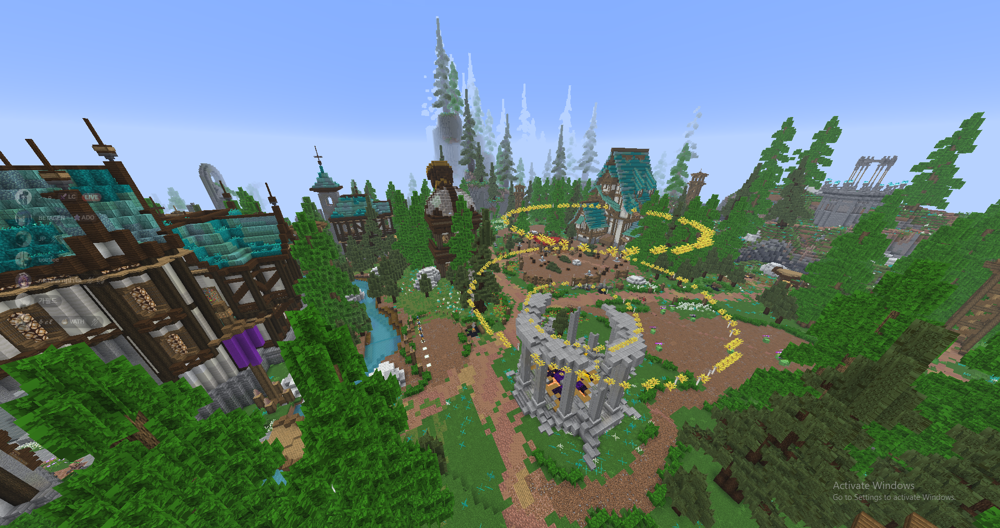
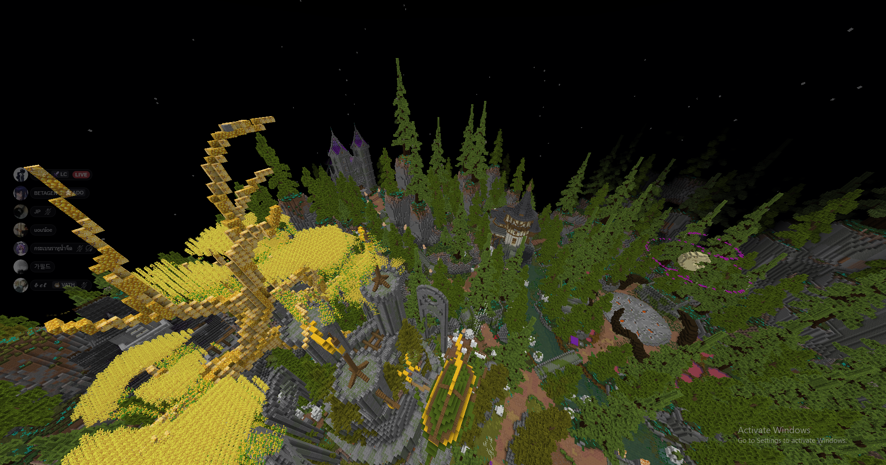
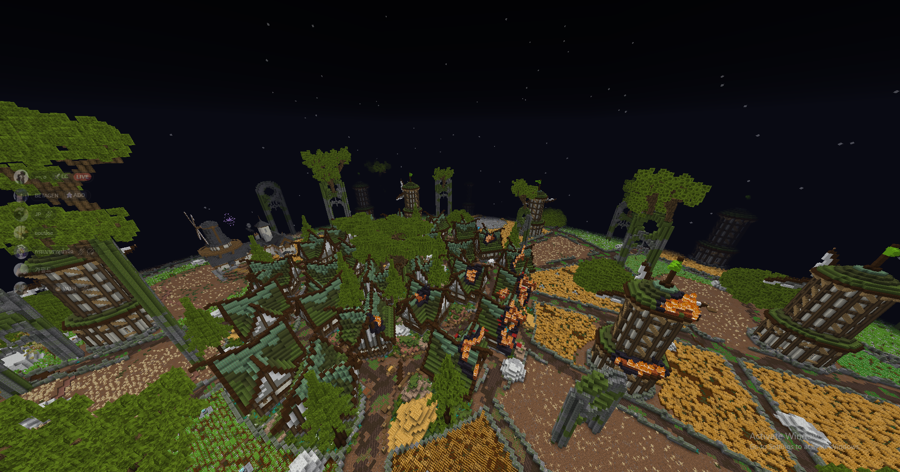
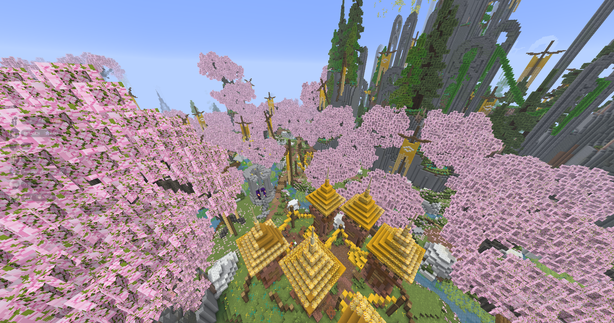

ดินแดนทั้ง 12 แห่งของหุบเขา แต่ละที่มีภูมิประเทศ มอนสเตอร์ และเรื่องราวเป็นของตัวเอง

มอนสเตอร์ประจำถิ่น Prairie Slime , Infected Person
บอสพื้นที่ Kur and Rot(Gigi)
ดันเจียนประจำพื้นที่ The Secret of Eternal
X-3995 Y 143 Z 4007
ดันเจียนประจำพื้นที่ Dimension of Death
X-3820 Y 80 Z 3677

มอนสเตอร์ประจำถิ่น Religious Vill(Axe , Crossbow , Sword , Rider)
บอสพื้นที่ Medusa
ดันเจียนประจำพื้นที่ Mysterious Church of the Full Moon
X-3422 Y 115 Z 4154

มอนสเตอร์ประจำถิ่น Religious Vill(Axe , Crossbow , Sword , Rider)
บอสพื้นที่ Merloc(Mermidon)
บอสพื้นที่ Direwolf
บอสพื้นที่ Corrupted Golem King

มอนสเตอร์ประจำถิ่น Fox , Spirit Fox
บอสพื้นที่ Forest Spirit
ดันเจียนประจำพื้นที่ Dimension of Darkness
X-4018 Y 89 Z 3331
รายละเอียดภูมิประเทศ มอนสเตอร์ประจำถิ่น และจุดสังเกตของพื้นที่นี้ (ใส่เนื้อหาเพิ่มเติมภายหลัง)
รายละเอียดภูมิประเทศ มอนสเตอร์ประจำถิ่น และจุดสังเกตของพื้นที่นี้ (ใส่เนื้อหาเพิ่มเติมภายหลัง)
รายละเอียดภูมิประเทศ มอนสเตอร์ประจำถิ่น และจุดสังเกตของพื้นที่นี้ (ใส่เนื้อหาเพิ่มเติมภายหลัง)
รายละเอียดภูมิประเทศ มอนสเตอร์ประจำถิ่น และจุดสังเกตของพื้นที่นี้ (ใส่เนื้อหาเพิ่มเติมภายหลัง)
รายละเอียดภูมิประเทศ มอนสเตอร์ประจำถิ่น และจุดสังเกตของพื้นที่นี้ (ใส่เนื้อหาเพิ่มเติมภายหลัง)
รายละเอียดภูมิประเทศ มอนสเตอร์ประจำถิ่น และจุดสังเกตของพื้นที่นี้ (ใส่เนื้อหาเพิ่มเติมภายหลัง)
รายละเอียดภูมิประเทศ มอนสเตอร์ประจำถิ่น และจุดสังเกตของพื้นที่นี้ (ใส่เนื้อหาเพิ่มเติมภายหลัง)
รายละเอียดภูมิประเทศ มอนสเตอร์ประจำถิ่น และจุดสังเกตของพื้นที่นี้ (ใส่เนื้อหาเพิ่มเติมภายหลัง)